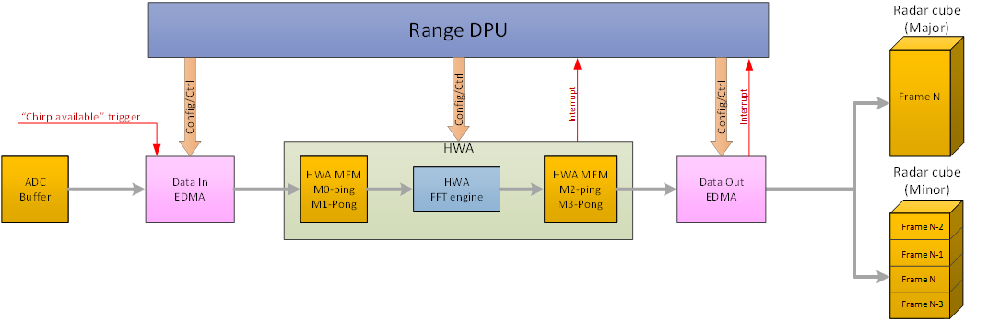
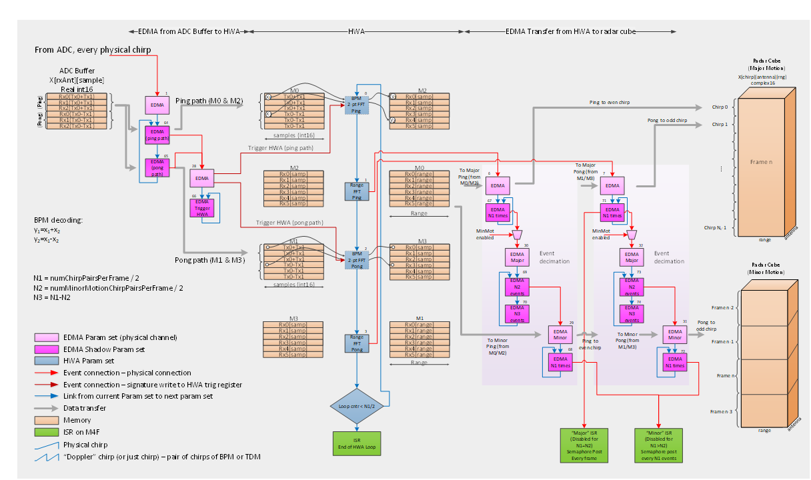
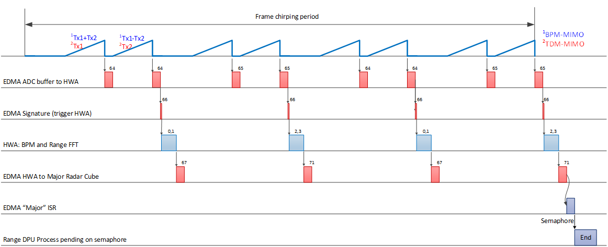
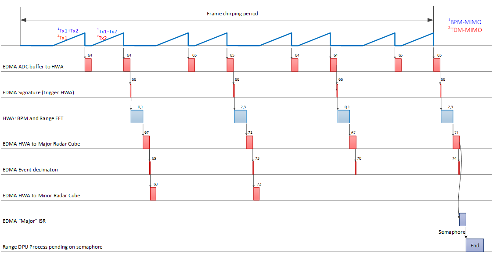

The Rangeproc or Range processing DPU supports 1D FFT of given time domain input signal, for every chirp signal.
Introduction
The range processing DPU receives ADC samples from the ADC buffer and performs:
- BPM decoding on the ADC samples (if BPM MIMO mode is enabled),
- Range FFT per antenna and chirp.
The range processing is executed on HWA. Data transfers from ADC buffer to HWA memory and from HWA memory to radar cube are achieved using EDMA. The scheme allows for running in the following modes:
- Major motion detection mode: Major motion radar cube is filled with range FFTs of all the chirps of the current frame,
- Minor motion detection mode: Minor motion radar cube is filled with range FFTs across several frames,
- Auto mode: Both major and minor motion radar cubes are filled with range FFTs of the chirps, major motion radar cube with data of the current frame, minor motion radar cube with data spread across several frames.
In Auto mode, in the current design, the sizes of the major and minor motion radar cubes must be the same. This means that in the auto mode, the following equation must hold:
Block Diagram
The top-level block diagram of the DPU is shown in the figure below.

Range processing DPU top-level diagram
The range processing detailed block diagram is shown below.

Range DPU block diagram
Range DPU Functioning
The parameters for the signal processing in major and minor mode can be set through configuration commands. The input EDMA (param sets 64 and 65 in figure) are linked to each other, each one handling two chirp events, after the two chirps are completed the signature EDMA is triggered, (param set 66), which alternately triggers the HWA param set 0, ping path, or param set 1, pong path. The HWA processing is triggered per chirp pair. In the document sometimes for convenience a pair of physical chirps is referred as just a chirp. The HWA processes the chirp pair in a ping pong manner. In BPM mode, in addition to the range FFT, the BPM decoding is performed on the real ADC samples using a 2-point FFT. Before the range FFT, a Blackman window is applied to the input samples. Since the ADC samples are real, only the lower half of the FFT is stored into the radar cube. Note that in TDM mode, the 2-point FFT param sets are omitted and only the two range FFT param sets are configured in the HWA loop. The output EDMA transfers data from HWA to radar cube matrices. There are two EDMA sets, ping path handling even number chirp pairs, and pong path for odd number chirp pairs. Each set consists of three EDMA channels: for the major motion data transfer, for the event decimator, and for the minor motion data transfer. In each path, per frame, the major motion EDMA is triggered N_1=N_FramesPerMinorMotProc/2 times, while the minor motion EDMA is triggered N_2=N_MinMotChirpPairsPerFrame/2 times. The Major motion EDMA has chaining enabled to pass all N_1 events to the event decimator (EDMA that performs dummy copy), which further passes through only N_2 events to the minor motion EDMA, and blocks (N_1-N_2) events.
The timing diagrams in the major motion, minor motion and auto modes are illustrated in the figures below respectively. The EDMA data transfers are labeled with the param set numbers shown in DPU block diagram.

Timing diagram in major motion mode

Timing diagram in minor motion mode

Timing diagram in auto mode
Usage Overview
API
To exercise the DPU functionalities, the application shall call the following APIs in sequence
- DPU_RangeProcHWA_init(): This function allocates memory for the range DPU instance and initializes it to zero. It also constructs the semaphores used for processing.
- DPU_RangeProcHWA_config(): Based on the configuration parameters, this function configures hardware accelerator FFT engine accordingly. It also configures data input and output EDMA channels to bring data in and out of HWA memory. The function is typically called one time before the sensor start command is issued to the RF. In the low power deep sleep (LPDS) mode, the function is called per frame.
- DPU_RangeProcHWA_process(): This function is called per frame. It is called after the trigger HWA command has been executed. The function is pending on a semaphore during the chirping period, and it exits after the last chirp processing of the frame is completed. Note that the function is pending on two semaphores, HWA loop completion and EDMA output transfer completion. The first one is redundant and is used only for debugging purposes.
- DPU_RangeProcHWA_control(): This function processes the received commands to the DPU. The main command (and currently the only one) performed by this function is to configure HWA common registers and arm the trigger to be ready for the incoming chirp sequence. This function is called per frame, at the end of each frame processing, and must be completed before the next frame begins.
- DPU_RangeProcHWA_deinit(): De-initializes and frees up the allocated DPU resources
Example Usage
Include the below file to access the APIs
DPU Initialization Example
if (rangeProcDpuHandle == NULL)
{
DebugP_log (
"Debug: RangeProc DPU initialization returned error %d\n", errorCode);
return;
}
DPU Configuration Parsing Example
pHwConfig = &rangeProcDpuCfg.hwRes;
params = &rangeProcDpuCfg.staticCfg;
params->numTxAntennas = 2;
params->numVirtualAntennas = 6;
params->numRangeBins = testConfig->numAdcSamples/2;
params->numChirpsPerFrame = testConfig->numChirpsPerFrame;
params->numDopplerChirpsPerFrame = params->numChirpsPerFrame/params->numTxAntennas;
params->numDopplerChirpsPerProc = params->numDopplerChirpsPerFrame;
params->isBpmEnabled = TRUE;
params->
windowSize =
sizeof(uint32_t) * ((testConfig->numAdcSamples +1 ) / 2);
params->ADCBufData.dataProperty.numAdcSamples = testConfig->numAdcSamples;
params->ADCBufData.dataProperty.numRxAntennas = testConfig->numRxAntennas;
params->rangeFFTtuning.fftOutputDivShift = 2;
params->rangeFFTtuning.numLastButterflyStagesToScale = 0;
params->enableMajorMotion = 1;
params->enableMinorMotion = 0;
params->numMinorMotionChirpsPerFrame = 0;
params->rangeFftSize = testConfig->numAdcSamples;
bytesPerRxChan = testConfig->numAdcSamples * sizeof(uint16_t);
bytesPerRxChan = (bytesPerRxChan + 15) / 16 * 16;
for (index = 0; index < testConfig->numRxAntennas; index++)
{
params->ADCBufData.dataProperty.rxChanOffset[index] = index * bytesPerRxChan;
}
pHwConfig->edmaInCfg.dataIn.channel = DPC_OBJDET_DPU_RANGEPROC_EDMAIN_CH;
pHwConfig->edmaInCfg.dataIn.channelShadow[0] = DPC_OBJDET_DPU_RANGEPROC_EDMAIN_SHADOW_PING;
pHwConfig->edmaInCfg.dataIn.channelShadow[1] = DPC_OBJDET_DPU_RANGEPROC_EDMAIN_SHADOW_PONG;
pHwConfig->edmaInCfg.dataIn.eventQueue = DPC_OBJDET_DPU_RANGEPROC_EDMAIN_EVENT_QUE;
pHwConfig->edmaInCfg.dataInSignature.channel = DPC_OBJDET_DPU_RANGEPROC_EDMAIN_SIG_CH;
pHwConfig->edmaInCfg.dataInSignature.channelShadow = DPC_OBJDET_DPU_RANGEPROC_EDMAIN_SIG_SHADOW;
pHwConfig->edmaInCfg.dataInSignature.eventQueue = DPC_OBJDET_DPU_RANGEPROC_EDMAIN_SIG_EVENT_QUE;
pHwConfig->intrObj = &intrObj;
pHwConfig->edmaOutCfg.path[0].evtDecim.channel = DPC_OBJDET_DPU_RANGEPROC_EVT_DECIM_PING_CH;
pHwConfig->edmaOutCfg.path[0].evtDecim.channelShadow[0] = DPC_OBJDET_DPU_RANGEPROC_EVT_DECIM_PING_SHADOW_0;
pHwConfig->edmaOutCfg.path[0].evtDecim.channelShadow[1] = DPC_OBJDET_DPU_RANGEPROC_EVT_DECIM_PING_SHADOW_1;
pHwConfig->edmaOutCfg.path[0].evtDecim.eventQueue = DPC_OBJDET_DPU_RANGEPROC_EVT_DECIM_PING_EVENT_QUE;
pHwConfig->edmaOutCfg.path[1].evtDecim.channel = DPC_OBJDET_DPU_RANGEPROC_EVT_DECIM_PONG_CH;
pHwConfig->edmaOutCfg.path[1].evtDecim.channelShadow[0] = DPC_OBJDET_DPU_RANGEPROC_EVT_DECIM_PONG_SHADOW_0;
pHwConfig->edmaOutCfg.path[1].evtDecim.channelShadow[1] = DPC_OBJDET_DPU_RANGEPROC_EVT_DECIM_PONG_SHADOW_1;
pHwConfig->edmaOutCfg.path[1].evtDecim.eventQueue = DPC_OBJDET_DPU_RANGEPROC_EVT_DECIM_PONG_EVENT_QUE;
pHwConfig->edmaOutCfg.path[0].dataOutMinor.channel = DPC_OBJDET_DPU_RANGEPROC_EDMAOUT_MINOR_PING_CH;
pHwConfig->edmaOutCfg.path[0].dataOutMinor.channelShadow = DPC_OBJDET_DPU_RANGEPROC_EDMAOUT_MINOR_PING_SHADOW;
pHwConfig->edmaOutCfg.path[0].dataOutMinor.eventQueue = DPC_OBJDET_DPU_RANGEPROC_EDMAOUT_MINOR_PING_EVENT_QUE;
pHwConfig->edmaOutCfg.path[1].dataOutMinor.channel = DPC_OBJDET_DPU_RANGEPROC_EDMAOUT_MINOR_PONG_CH;
pHwConfig->edmaOutCfg.path[1].dataOutMinor.channelShadow = DPC_OBJDET_DPU_RANGEPROC_EDMAOUT_MINOR_PONG_SHADOW;
pHwConfig->edmaOutCfg.path[1].dataOutMinor.eventQueue = DPC_OBJDET_DPU_RANGEPROC_EDMAOUT_MINOR_PONG_EVENT_QUE;
pHwConfig->edmaOutCfg.path[0].dataOutMajor.channel = DPC_OBJDET_DPU_RANGEPROC_EDMAOUT_MAJOR_PING_CH;
pHwConfig->edmaOutCfg.path[0].dataOutMajor.channelShadow = DPC_OBJDET_DPU_RANGEPROC_EDMAOUT_MAJOR_PING_SHADOW;
pHwConfig->edmaOutCfg.path[0].dataOutMajor.eventQueue = DPC_OBJDET_DPU_RANGEPROC_EDMAOUT_MAJOR_PING_EVENT_QUE;
pHwConfig->edmaOutCfg.path[1].dataOutMajor.channel = DPC_OBJDET_DPU_RANGEPROC_EDMAOUT_MAJOR_PONG_CH;
pHwConfig->edmaOutCfg.path[1].dataOutMajor.channelShadow = DPC_OBJDET_DPU_RANGEPROC_EDMAOUT_MAJOR_PONG_SHADOW;
pHwConfig->edmaOutCfg.path[1].dataOutMajor.eventQueue = DPC_OBJDET_DPU_RANGEPROC_EDMAOUT_MAJOR_PONG_EVENT_QUE;
pHwConfig->radarCube.dataSize = testConfig->numRangeBins * testConfig->numTxAntennas * testConfig->numRxAntennas * sizeof(cmplx16ReIm_t) * params->numDopplerChirpsPerProc;
DPU Configuration Example
&rangeProcDpuCfg);
if(retVal < 0)
{
DebugP_log(
"DEBUG: RANGE DPU config return error:%d \n", retVal);
}
DPU Process Trigger Example
if(retVal < 0)
{
DebugP_log(
"DEBUG: Range DPU process return error:%d \n", retVal);
}
DPU Control Trigger Example
if(retVal < 0)
{
DebugP_log(
"RangeProc DPU control error %d\n", retVal);
}
DPU Close Example
if(retVal < 0)
{
DebugP_log(
"RangeProc DPU deinit error %d\n", retVal);
}

 1.8.20
1.8.20